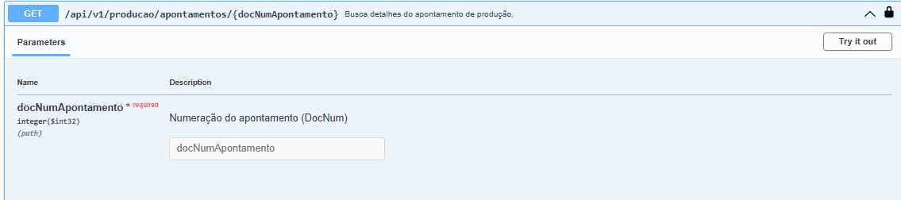

Busca Detalhes do apontamento de produção
Este EndPoint possibilita, realizar busca pelo DocNum do apontamento de produção realizado pelo usuário, o retorno da API traz somente o Apontamento definido no campo “docNumApontamento”.
Retorno API
[
{
"sequenciaOperacao": 10,
"operacao": {
"tipoOperacao": 0,
"operacaoExterna": false,
"operacaoFicticia": false,
"desconsiderarNoLeadTime": false,
"codigo": "5",
"nome": ""
},
"operacaoConcluida": false,
"docEntryOrdemProducao": 14,
"docNumOrdemProducao": 0,
"periodo": "8",
"series": "-1",
"linhas": [
{
"recurso": {
"descricao": "Maquina01",
"tipo": 0,
"codigo": "1",
"nome": "Maquina01"
},
"quantidadeRecurso": 1,
"idColaborador": -1,
"dataInicial": "2021-08-25T00:00:00",
"dataFinal": "2021-08-25T00:00:00",
"tempoTotal": {
"ticks": 36000000000,
"days": 0,
"hours": 1,
"milliseconds": 0,
"minutes": 0,
"seconds": 0,
"totalDays": 0.041666666666666664,
"totalHours": 1,
"totalMilliseconds": 3600000,
"totalMinutes": 60,
"totalSeconds": 3600
},
"quantidadeProduzida": 0,
"statusRecurso": "1",
"classificacaoRefugo": "-1",
"quantidadeRefugo": 0,
"linhaDocumentoBase": 1,
"horaInicial": 430,
"horaFinal": 530,
"docEntry": 12,
"lineId": 1,
"id": "00000000-0000-0000-0000-000000000000",
"validationResult": {
"isValid": true,
"invalid": false,
"errors": []
},
"valido": true,
"invalido": false
}
],
"docEntry": 12,
"docNum": 12,
"dataCriacao": "2021-08-25T00:00:00",
"dataAtualizacao": "2021-08-25T00:00:00",
"id": "00000000-0000-0000-0000-000000000000",
"validationResult": {
"isValid": true,
"invalid": false,
"errors": []
},
"valido": true,
"invalido": false
}
]